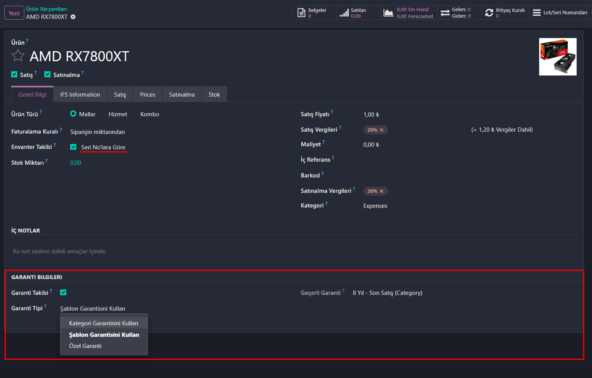
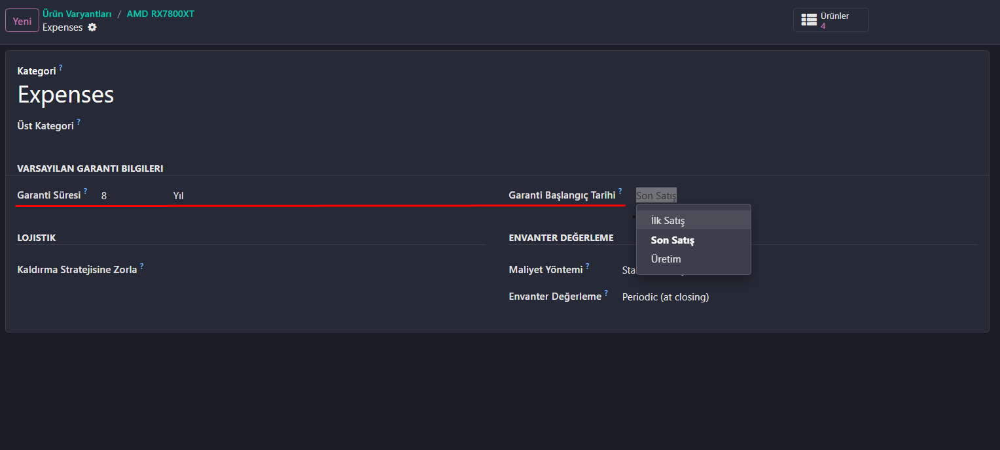
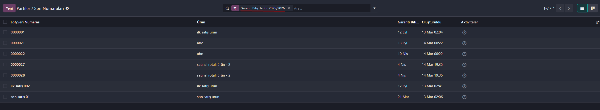

Comprehensive warranty management for Odoo 19

Customer Warranty is a comprehensive warranty management module for Odoo 19 that enables businesses to track product warranties at multiple levels - from product categories to individual serial numbers. The module automatically calculates and manages warranty expiry dates based on customer delivery dates, making warranty tracking effortless and accurate.
Set default warranty terms at the category level that automatically apply to all products in that category.

Configure warranty settings for individual product variants with the option to inherit from template or category, or set custom warranty terms.
View all warranty information in a convenient list format with effective warranty details clearly displayed.

Inventory > Configuration > Product CategoriesInventory > Products > ProductsFor products with variants:
First Sale: Warranty date is set only on the first customer delivery. Subsequent sales don't change the warranty.
Last Sale: Warranty date is updated with each customer delivery. Returns reset the warranty date.
Manufacturing: Warranty date is set when the product exits production, regardless of customer delivery.
When a product is returned from a customer:
Issues: Report bugs or request features on GitHub Issues
Contributions: Pull requests are welcome!
Author: Salih Kalender
Website: https://github.com/SalihKalender28